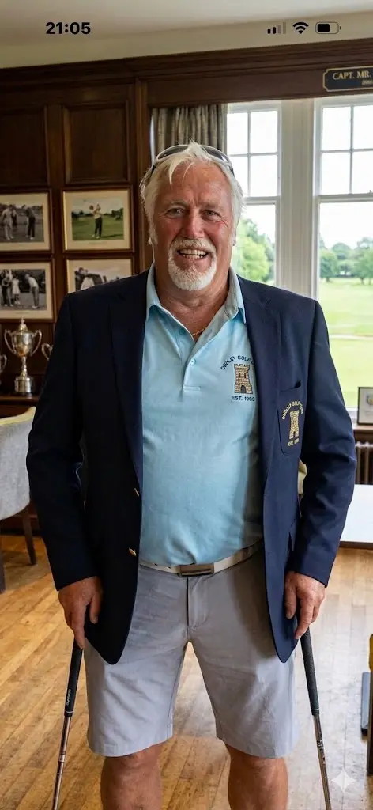

A Legacy of Leadership
"Since 1893, the Captaincy has stood as a symbol of dedication and service to the game."
To serve as Captain of Dudley Golf Club is to step into a lineage of deep pride, a tradition forged on these volcanic ridges over a century ago. Our role extends far beyond the honorary; it is a commitment to safeguarding the rules of the royal and ancient game, fostering an inclusive, thriving community, and ensuring that our pristine fairways remain a source of joy for generations to come.

Club Captain
2026 Season
Championing the competitive spirit of our membership, organizing our historic board competitions, and upholding the timeless camaraderie that makes Turners Hill a home away from home.
Seniors Captain
2026 Season
Leading our thriving senior section with a focus on competitive match fixtures, regular fellowship mornings, and preserving our club's traditional hospitality across the West Midlands.
The Captain’s Drive-In
Every competitive season at Turners Hill begins with a singular, historic moment: the Captain’s Drive-In. Standing on the opening tee, facing the sweeping vistas of the Black Country, the incoming leadership strikes the inaugural drives under the watchful eyes of the membership. It is a tradition that marries our rich history with the vibrant future of the club—a moment where nerves meet honor, and a new chapter officially begins.
Ladies' Golf at Dudley
We are actively expanding and welcoming new players to our ladies' section. Whether you are an experienced golfer looking for competitive club matches, or a complete beginner ready to take your first swings via our professional academy setups, Dudley Golf Club provides a highly supportive, friendly environment.
Explore Ladies' Membership Options